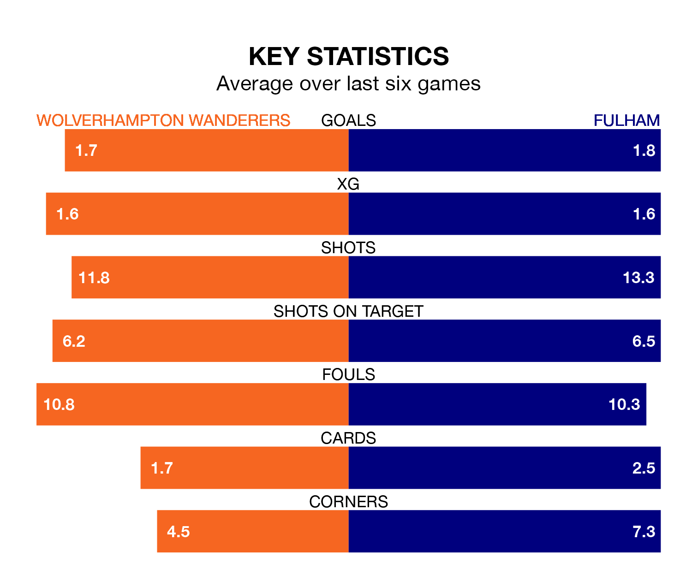

Fulham travel to Wolverhampton Wanderers on Saturday in the Premier League.
The visitors come into the game on the back of a win in their last match, having beaten Brighton and Hove Albion 3-0 at home, with goals from Adama Traoré, Harry Wilson and Rodrigo Muniz.
Wolves, meanwhile, lost their last match, 3-0 against Newcastle United.
In the last 10 years, Wolves and Fulham have played each other on 17 occasions. Wolves won nine of them, Fulham two, and they drew six times.
On average, Wolves scored 1.7 goals and the Cottagers 1.0 in those matches.
Their last meeting was on November 27, when Fulham won 3-2 at home.
With Bernd Leno between the sticks, Fulham can rely on one of the league's safest pair of hands. He has kept seven clean sheets in his 27 appearances this season in the Premier League.
In Wolves's net, José Sá has four clean sheets in 25 games. He has conceded a goal every 63 minutes, only slightly more often than the 66 minutes between goals for Leno.
With 39 goals in 27 games so far this season, the Cottagers are scoring at below the league average rate with 1.4 goals per game. And they are conceding at an average rate, letting in 42 goals at a rate of 1.6 per game.
The hosts are also below average scorers, with 1.5 goals per game, compared to a league average of 1.6. They have conceded 1.6 goals per game.
Wolves are in mixed form in the Premier League, with three wins and three losses from their last six games.
With three wins and two draws over that period, the away team's form is slightly better – they have taken 11 points from 18, compared to Wolves's nine.
Fulham are 12th in the table after 27 games, of which they have won 10 and drawn five, earning 35 points.
The home side are two places ahead of Fulham in 10th, with 11 wins and five draws putting them on 38 points.
Saturday's match will be refereed by Tony Harrington, who has taken charge of four Premier League games so far this season, issuing one red card and booking 14 players. He has not awarded any penalties.
He is yet to oversee a match featuring either Wolves or Fulham this season.
Updated: 09:34 (UTC), 08/03/24